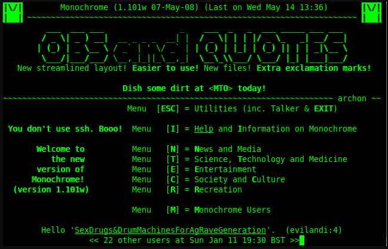
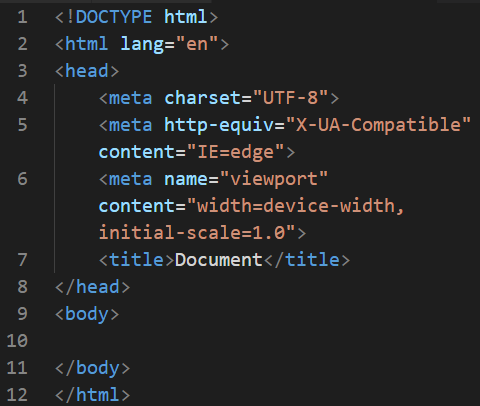
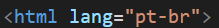
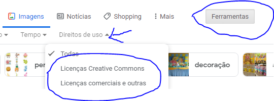
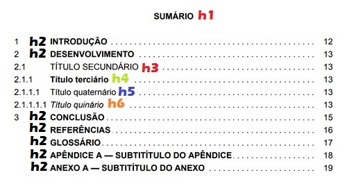

Caderno Curso HTML e CSS Curso em Vídeo
1. Referencias
1.1 Referencias de sites
- Repositorios do Professor - github.com/gustavoguanabara
- Repositorios do Professor - gustavoguanabara.github.io
- Documentação Oficial do HTML - developer.mozilla.org/pt-BR/docs/Web/HTML
- Documentação Oficial do CSS - developer.mozilla.org/pt-BR/docs/Web/CSS
- Mozila Developer Network - developer.mozilla.org/pt-BR/
- World Wide Web Consortium (referencia oficial) - www.w3c.br?
- Web Hypertext Application technology working group - whatwg.org/
- W3Schools (Refsnes Data) - w3schools.sinsixx.com/default.htm
1.2 Referencias de Livros
- HTML5 - Mark Pilgrim - O'reilly
- CSS - Eric Meyer - O'reilly
- Flexbox in CSS - Eric Meyer - O'reilly
- Grid Layout in CSS - Estelle Weyl - O'reilly
- HTML5 e CSS3 - Elizabeth Castro e Bruce Hyslop - Alta Books
- HTML&CSS - Jon Duckett - Alta Books
- HTML e CSS - Elisabeth Robson e Eric Freeman - Alta Books
- Crie seu prorio site - Nate Cooper e Kim Gee - Novatec
- HTML5 - Mauricio Samy Silva - Novatec
- CSS3 - Mauricio Samy Silva - Novatec
- HTML5 e CSS3 - Mauricio Samy Silva - Novatec
- CSS Grid Layout - Mauricio Samy Silva - Novatec
- Curso De Design Grafico
- Design
- A Psicoologia Das Cores
- Pensar Com Tipos
A historia da internet
A internet fui criada durante a guerra fria para a comunicação entre os centros mililtares americanos
Protocolo = forma de trocar dados unico para os computadores se comunicarem (similar a se comunicar em um unico idioma para o entendimento de todos)
➡ É o conjunto de informações , decisões, normas e regras defenidas a partir de um ato oficial
Foi criado o NCP (Network Control Protocol) = protocolo de controle de rede
➡ Esse protocolo funcionava apenas uma conexãso por vez, logo, não dava pra ter muitos pontos transmitindo dados
Depois foi criato o TCP (Transfer Control Protocol). Esse protocolo resolvia o problema de ser apenas uma conexão por vez, mas, surgiu um problema de identificação de maquinas, que foi resolvido com a criação do IP (internet protocol - protocolo de identificação de maquinas), resolvendo o problema de identificação de maquinas, a junção foi chamada de TCP/IP e é usado ate hoje!
Eles queriam juntar varias redes para criar conexões interenacionais, o nome da internet vem dai: international|networking. A internet cobre o mundo inteiro, ligando todos os continentes da terra, conectados por cabos submarinos. A conexões para o interior acontece por meio de satelites, transmissões por antenas, etc.
Quando se quer acessar do seu computador outro computador(servidor), o seu computador faz a solicitação do arquivo ao servidor, o servidor quebra o arquivo em varios pacotinhos e manda por rotas/caminhos diferentes e no final, todos os pacotes vao estar no seu computador. O TCP do seu computador vai reunir e reconstituir o arquivo
Documentario sobre como a internet funciona
A internet, antigamente, não tinha nada grafico, era só o terminal, ele juntava as letras para criar estruturas, desenhos, letras em caixinhas, etc.
Depois foi criado o http = (hypertext transfer protocol) - protocolo de transferencia de hipertexto - [protocolo incluido no TCP/IP] e o HTML (Hyper Text Markup Lenguage) - linguagem de marcação para hipertextos. E o WWW (World Wide Web) - rede de alcance mundial, depois foi criado o navegador para navegar na rede
Com o conjunto dos protocolos: https:// ; html ; www e a criação de navegadores. A world wide web se tornou realidade
Na internet existem varios servidores com varias funções especilizadas de cada um com seu serviço ou protocolo. Existem os especialistas em transferencia de arquivos, hypertexto simples, receber e mandar emails, HTTP, etc. Essas redes se comunicam entre sí.
Como funciona o computador
O computador não é inteligente, é um burro muito rapido. O PC funciona com sinais: "0" e "1", na verdade (não são zeros e ums), são sinais eletricos com sinal (1) e sem sinal (0) - são digitos binarios (bit = binary digit) - (1 bit = 0 ou 1)
Para representar algum dado é usado, no minimo, 8 bits em sequência: 01000001 = A - 8 bits forma 1 byte = porção minima para representar uma informação.
UTF-8 = codigo multibyte = usa de 1 a 4 bytes para representar letras simbolos, caracteres acentuados, emojis, etc. O computador entende 0 e 1 mais ou menos assim |_|‾| (onda quadrada/binaria)
Representação de dados
O computador trabalha com base 2 - 210 = 1024, por isso não é 1000 bytes
- 1024B - Bytes
- 1024B = 1KB - KiloByte
- 1024KB = 1MB - MegaByte
- 1024MB = 1GB - GigaByte
- 1024GB = 1TB - TeraByte
- 1024TB = 1PB - PetaByte
- 1024PB = 1EB - HexaByte
- 1024EB = 1ZB - ZetaByte
- 1024ZB = 1YB - YotaByte
- E assim por diante...
MegaBytes X Megabits
Bytes é represenado com o "B" maiusculo. Normalmente é usado para ARMAZENAMENTO
Enquanto bits o "b" é minusculo. É usado mais para TRANSMISSÃO
Como nos conectamos a internet
PC(clinete)➡➡➡modem➡➡➡linha_telefonica➡➡➡internet➡➡➡linha_telefonica➡➡➡modem➡➡➡servidorDNS
PC(clinete)⬅⬅⬅modem⬅⬅⬅linha_telefonica⬅⬅⬅internet⬅⬅⬅linha_telefonica⬅⬅⬅modem⬅⬅⬅servidorDNS
PC(clinete)➡➡➡modem➡➡➡linha_telefonica➡➡➡internet➡➡➡linha_telefonica➡➡➡modem➡➡➡site-PC(servidor)
PC(clinete)⬅⬅⬅modem⬅⬅⬅linha_telefonica⬅⬅⬅internet⬅⬅⬅linha_telefonica⬅⬅⬅modem⬅⬅⬅site-PC(servidor) *por diversas rotas diferentes*
O modem transforma a onda senoidal (vinda da rede de telefone) em onda binaria para que os PCs consigam se comunicar
O modem serve para fazer modulação e demodulação
Modulação = quando os dados chegam
> Demodulação = quando os dados saem
Servidor é um computador com alta capacidade de armazenar e transmitir dados, serve para armazenar os dados de um site
Existe o IP publico e o IP local. O publico é gerado assim que se liga o computador, vai mudando e te identifica na internet
O servidor DNS (Domain Name System = Sistema de Nome de Dominio) faz a ligação entre a URL e o IP do servidor ex: instagram.com = 157.240.22.174
A internet é composta por diversas rotas, os caminhos em que os dados são enviados são diversos. O arquivo vai dividido, as vezes, uma das rotas que seria mais rapido esta congestionada e ele muda a rota. São diversas rotas com diferentes partes do arquivo enviadas ao mesmo tempo.
A URL é a ponte entre o IP e o Nome de Dominio. O servidor faz a hospedagem do SITE (arquivo HTML e CSS) para que seja acessado por PCs
Hospedagem = local onde seu site ficara armazenado - espaço para armazenar seus arquivos
Dominio = nome que identifica seu site (nome unico)
www.github.com/gustavoguanabara
- O endereço inteiro é a URL (uniform resource locator) "localizador de recurso unico"
- github.com = Dominio
- github = Nome do Dominio
- .com = TLD (Top Level Domain)
- www = sub-dominio principal (mas pode ser outra coisa, nome por ex)
- O que fica depois da barra (/) é o caminho - outra pagina do site
O que é HTML e CSS?
HTML = HyperText Markup Language = "linguagem de marcação para hipertexto"
➡ O foco é o CONTEUDO
(conteudo = textos, imagens, videos, tabelas, etc)
HTML puro = sem estilo CSS (só o html)
CSS = Cascading Style Sheets = "folhas de estilo em cascata"
➡ O foco é o DESIGN.
Alem deles tem o JAVASCRIPT que cria as interatividades (é uma linguagem de programação)
➡ Serve para criar menus,
animações, popups, vlidações, etc
A união dos 3 forma um site completo com conteudo, design e interatividades
HTML na prática
➡ no HTML usamos "tags" para criar conteudo (as tags ficam entre colchete angulares)
ex: <h1> Exemplo de titulo <h1>
➡ "<" é a abertura da tag
➡Exemplo de titulo é o conteudo
➡ ">" é o fechamento da tag
- A tag img não tem fechamento, assim como algumas outras tags
- src e alt = parametros
- foto.png e Exemplo de foto = valor
- alt = texto alternativo - se nao mostrar a imagem, aparece esse texto
- Toda tag pode ter parametros e valores
Estilo em CSS
- Geralmente está dentro de uma tag <style> (no head)
- Usa seletores
- Toda declaração tem que ter ponto e virgula no final
Informações adicionais
- Identação = posição que marca a hierarquia do codigo, serve para mostrar o que esta dentro do que
- Head = area de configurações
- Body = area onde fica o conteudo em sí
Estrutura básica de um documento HTML
Um site estrativo é um site criado apenas com HTML, CSS e JavaScript puro.
Front-End e Back-End
HTML, CSS e JS são tecnologias client-side - que carregam/funcionam do lado do cliente (no PC-cliente)
➡ Front-end = desenvolve tecnologias do lado do cliente. O desenvolvedor front-end deve saber o basico de imagens, cores, tipografia, photoshop, gimp.
➡ Gera a parte visual e interativa do site - se preocupa com a experiencia do usuario que esta visitando o site
Php, JS Node, C#, Python, Java e Ruby são tecnologias server-side - que carregam/funcionam do lado do servidor
➡ Back-end = desenvolve tecnologias do lado do server.
➡ Gera a interação com o servidor
➡ Uma loja virtual (por exemplo) precisa que seja visto o estoque, quais tamanhos e cores estão disponiveis, promoções, etc. Essas tecnologias servem para isso.
Desenvolvedor Full-stack = Back-end + Front-end
"<" & ">" = tag | html = valor da tag (qual tag) | lang = parametro | ="pt-br" = valor do parametro
as tags que são aplicadas a algo especifico precisam da tag de fechamento, tags que são usadas para todo o arquivo só tem abertura, não precisa fechar
dentro do html existe a area body(conteudo do site) e a area head(configurações do site)
Se escrever a tag (sem <) e der enter, ele escreve a tag completa (inclusive com parametros) ou se escrever um lado (<tag>) já fecha automaticamente
Tag de cabeçalho = <hn> onde n é o tamanho, de forma decrescente: 1>2>3>4>5>6
Tag para parágrafo = <p>
Tag para quebrar linha = <hr> (pula uma linha), é cumulativo, mas, em um codigo profisional, não deve ser usado de forma acumulada.
Parágrafos e quebras de linhas
O HTML não contabiliza mais de um espaço ou enter. Ele funciona com marcações, se você precisa de mais de um espaço ou enter usa-se uma tag para isso.
Para escrever por extenso "<" e ">" usa-se "&" + "lt" + ";" para "<" e "&" + "gt" + ";"" para ">" assim, é possivel escrever por extenso "<" e ">"
Para comentar escreva "<!" + "--" para abrir o comentario, e "<!" + "--" para fechar o comentario.
Caracteres Especiais
Todo cractere especial começa com "&" e termina em ";".
Ex: &euro + ; = € | ✉ + ; = ✉ |
Um dos principais caracteres especiais é o de espaço em branco. Para escreve-lo usa-se + ;.
Para encontrar o codigo do emoji, basta acessar a emojipedia.com
➡Deve-se copiar o que esta depois do "+" e colar depois do prefixo "&#x" e fechar com o ";" no final.
A maioria dos emojis não aparecem em sistemas 32 bits, principalmente os emojis mais novos, somente em 64 bits.
Direitos Autorais
Cuidado com direitos autorais na hora de adicionar imagens aos - para ver se tem direitos autorais, no google imagens, vai em ferramentas, direito de uso e selecione o tipo
As licenças creative communs são de uso livre.
Alguns sites para pegar imagens sem direitos autorais:
➡unsplash.com
➡pexels.com
JPG X PNG
Para imagens usamos ".jpg" ou ".png". O JPG é um metodo de compreensão (compactação) de imagens. A internet não pode ter arquivos pesados, por isso o jpg é recomendado. O PNG tambem é compactado (nao tanto quanto o JPG) e tem transparencia (fundo transparente)
No google imagens podemos filtrar por transparencia, tamanho, etc.
O JPG distorce muito mais que o PNG quando aproxima pois está mais compactado (menor)
Para um site a largura maxima deve ser de 1500px. Com imagens muito pesadas o site vai demorar muito a carregar, ficando inviavel de acessar rapidamente.
A resolução da imagem tambem é algo que vai interferir muito no carregamento do site. Uma resolução entre 50 e 72 ja é suficiente. E uma largura recomendada é 600-650px
Redimensionando tem-se um aproveitamento muito melhor do site. Uma imagem de 3000px tem 1836KB, com as resoluções recomendadas para um site ela reduz para 650px com 122KB ou 1200px com 344KB (muito menor)
O CSS serve para modificar o tamanho que a imagem vai aparecer no site, mas a imagem em si continua com o mesmo tamanho quando é exportada para o servidor. Logo, é melhor dimensionar e exportar do tamanho proximo ao que sera usado
Favicon
É o icone que fica na aba junto ao title. Para adiciona-lo, ho head, em cima do title, vai criar a tag link:favicon e no href vai adicionar o nome do arquivo (lembrando que ele deve estar em formato .ico)
Hierarquia de titulos
Os hn servem para hierarquizar os titulos e subtitulos do mais alto h1 ao mais baixo h6.
Para cria um texto aleatorio, basta escrever "lorem" e da enter para aparecer um texto avulso, sem nexo. Serve para testar algo.
O "hn" vai ate o h6. Para semantica HTML fazer sentido ela deve respeitar os niveis de hierarquização e conter paragrafos com conteudo dentro de cada nivel
Semantica (Significado) HTML
No HTML, tags semanticas são as que fazem sentido
➡ Algumas tag entraram em desuso por não fazerem muito sentido, pois fugiam da tematica conteudo, foram substituidas
Existem tags ou paprametros que ficaram obsoletas ao longo do tempo. O VSCode acusa que esta obsoleta deixando em vermelho, pois nao pode mais utilizar, apesar de funcionar. site para ver as tags obsoletas: https://dev.w3.org/html5/pf-summary/obsolete.html. Sempre esteja atualizado para saber as atualizações
Agora tudo que se refere a forma (estilo) ex: posição, cor, etc. Usa-se CSS. As tags que deixam fazer isso no prorprio HTML não são mais utilizadas, no HTML, hoje, usa-se só para conteudo
Marcação de texto
Para fazer marcações (como com um marcador-de-texto) usa-se a tag <mark>. Ela deixará todo o texto marcado.
É possivel mudar a cor de marcação. Por padrão a cor é amarela, mas adicionando o parametro style com o valor background-color: NomeDaCor da pra mudar para qualquer cor. No VSCode, com o mouse em cima do quadrado colorido da pra escolher mais especificamente a cor.
Se cada tag precisar de uma configuração de estilo especifica, o melhor seria adicionar um parametro para cada uma com seus diferentes estilos. Mas no caso de todas usarem o mesmo estilo, o melhor é criar uma tag style (no head) e adicionar uma cor direto a tag, assim, só de adicionar a tag, a cor ja estará em vigor (o parametro ja esta configurado)
A tag <big> ficou obsoleta, no entanto, a tag <small> não ficou. Logo, ainda da pra usar a tag <small> para escrever em letras pequenas. Ex: Isso está normal!!! | Isso está pequeno!!!
- A tag <del> será o texto com um risco em cima. EX:
Isso esta com a tag del!!! - A tag <ins> será o texto sublinhado. EX: Isso esta com a tag ins!!!
- A tag <sup> será o texto ficar acima. Ex: 210
- A tag <sub> será o texto ficar abaixo. Ex: H2O
- A tag <code> serve para deixar a fonte mono-espaçada, ficando mais facil de ler (não faz identação) Ex:
Aqui está se aplicando a tag code!!! - A tag <pre> serve para que apareça como HTML exatamente como foi escrito(Espaços e quebras de linhas).
Ex:<!DOCTYPE html> <html lang="pt-br"> <head> <meta charset="UTF-8"> <meta http-equiv="X-UA-Compatible" content="IE=edge"> <meta name="viewport" content="width=device-width, initial-scale=1.0"> <title>Document</title> </head> - A tag <q> serve para fazer uma citação simples - vai ficar entre aspas. Ex:
blablabla
- A tag <blockquote> serve para fazer uma citação que ficara com um espaçamento (tipo um TAB). Nessa tag é possivel adicionar o parametro cite="" e adicionar o link da referencia, (não aparecerá o link mas, no mecanismo de busca do google ele ficará referenciado)
Ex:Exemplo de citação com cite do google
- A tag <abbr> serve para fazer abreviações (vai aparecer um pequeno popup com o que aquela sigla significa)
Ex: HTML
Listas
Lista Ordenada
Para criar uma lista ordenada cria-se a tag <ol> (ordenade list) e dentro dela cria as <li> que são os itens da lista. Uma lista ordenada numera os itens Pode-se adicionar o parametro type para definir o tipo: numerico (1,2,3) romano (I,II,III) romano min (i,ii,iii) letra (A,B,C) e letra min (a,b,c)
Ex:
- Exemplo de lista
- Primeiro
- Segundo
- Terceiro
Para que uma lista comece por um valor especifico usa-se o parametro start="" . O valor do start só pode ser numerico, mesmo que a lista esteja outro tipo, deve-se colocar o equivalente de modo numerico. Ex: V = 5
Lista Não Ordenada
A tag para lista não ordenada é <ul>. Também usa os <li> para listar. Vai listar tudo com pontos. Da pra colocar um type para personalizar o tipo de ponto que aparece, os tipos são: disc (bolinha [padrão]) , square (quadrado)
Ex:
- Exemplo de lista
- Primeiro
- Segundo
- Terceiro
Da pra criar uma lista dentro de um item de uma lista.
Ex:
- Jogos PS1
- Power Ranger
- Jackie Chan
- Goin Quackers
- Jogos PS2
- Simpsons Hit and Run
- Prince of Perce
- God of War II
- Jogos PS3
- GTA V
- Fifa 18
- God of War III
Lista de Definição
Tem também a Lista de Definição <dl> dentro dela tem o <dt> que serve como Termo e o <dd> que serve como Descrição o uso de dt e dd ajuda no SEO do google
Ex:
- Item 1
- Descrição do item 1
- Item 2
- Descrição do item 2
- item 3
- Descrição do item 3
Para que seu site apareça na busca do google é preciso estudar sobre CEO (search engine optimization) = "sistema de busca otimizado"
Para criar links usa-se a tag <a>. Ela abre um atributo href="" . Dentro das aspas é adicionado a URL (para links externos) ou o nome da outra pagina do site (link interno). Pode-se adicionar o atributo target com o valor _blank para que o link abra em uma nova aba e, para melhorar o SEO, adicione o parametro rel com o valor external.
Links Internos
Links Internos - faz o direcionamento a outra pagina que esta no mesmo servidor do site. Para criar uma nova pagina deve-se criar um novo arquivo
Para criar um link interno basta apertar (dentro da referencia [""]) ctrl + espaço para abrir as opções de links internos (se tiver pasta vai aparecer também).
Para um arquivo que esta dentro de uma pasta deve-se referencias a origem do arquivo anteriormente a ele.
Ex: pasta/arquivo.html.
Já de uma pagina dentro de pasta para uma pagina fora da pasta deve-se referenciar pra ele voltar (como em um terminal)
Ex: ../arquivo.html (o ../ serve para retornar)
Para ir para primeira pagina deve-se adicionar o parametro rel="prev" e na segunda rel="next" (não existe rel internal)
➡ Serve para melhorar o SEO do google.
Também existe um rel="nofollow" para sites que não se tem total confiança (significa que você não da um aval). Existe um target para a propria pagina _self.
Para criar links de download usa-se a tag de ancora com o caminho para o arquivo que será baixado. Para que seja baixado usa-se o parametro type.
O valor do parametro vai depender do tipo de arquivo que será baixado. Para pdf por exemplo é application/pdf . Para adescobrir esse valor basta acessar o site:
https://www.iana.org/assignments/media-types/media-types.xhtml
Imagens Responsivas
Conceito de responsividade: Atitudes compreensivas que visam favorecer a autonomia
Design Responsivo: Fazer com que uma página possa ser acessada independente da sua resolução de tela.
A tag <picture> serve para adicionar imagens de forma responsiva, através de sources que disponibilizam varios de imagens para diferentes tamanhos de tela e navegadores. Dentro dela deve ser escrita a tag <source> e <img>
Ex:
Pagina com imagem responsiva
Conforme o navegador vai diminuindo o tamanho da tela (lateralmente) vai substituindo a imagem que aparece.
O codigo da página responsiva fica assim:
<picture>
<source media="(max-width: 300px)""
srcset="imagensindexprincipal/imagemp-300.png" type="image/png"> Nível 1
<source media="(max-width: 700px)"
srcset="imagensindexprincipal/imagemm-700.png" type="image/png"> Nível 2
<img src="imagensindexprincipal/imagemg-1000.png" alt=""> Nível 3
</picture>
O uso do source deve respeitar a hierarquia do menor. O que tiver tamanho menor (no max-width) deve ficar a cima do que tem tamanho maior. Para não ter problema com a barra de rolagem atrapalhando, sempre aumente em 50px o max-width, assim ela não aparecerá
O que é o source em sí?
Source é usado para especificar multiplos recursos de mídias. Usado nas tags: <picture> , <audio> e <video> . É usado para disponibilizar multiplos formatos suportados por diferentes navegadores. Funciona como uma pilha, se a primeira opção não for compativel vai para segunda, se a segunda nao for vai para terceira, por isso é importante a hierarquização (tag source não tem fechamento)
Os parametros usados são:
- src ou srcset - Define o endereço do arquivo de mídia
Ex: srcset="imagem.png" - media - Define o tipo de mídia
Ex: media="(max-width: 500px)" - type - Define o tipo do arquivo
Ex: type="imagem/png"
Qual a diferença entre src e srcset? - O srcset é usado apenas em source, enquanto o src é usado para todo o resto.
Adicionando Audios e Videos
Alguns navegadores não tem compatibilidade com alguns tipos de audios, logo, será preciso usar alguns sources com varios formatos para conseguir rodar na maioria dos navegadores
Depois de criar todos os sources deve-se adicionar um paragrafo para informar que seu navegador não é compativel com os formatos de audio. Depois de tentar carregar todos os sources ele exibirá a mensagem de "Seu navegador não é compativel com esse arquivo." Qualidade top é para arquivos de download. Arquivos de navegação devem ser de fácil acesso (leves e rapidos)
Na tag <audio> pode-se adicionar o parametro preload. Ele tem 3 valores: none (sem preload) auto(o site só vai parar de carregar com o arquivo inteiro) e metadata (vai carregar só o nome do arquivo e quando der play vai começar a puxar o audio). Também tem o control para mostrar os controles (menu pequeno pra dar play). Também tem loop para o audio ficar repetindo e o autoplay para que já toque o audio assim que carregar a pagina
Para vídeos é a mesma coisa, só vai mudar o type que deve ficar com video/mp4 (por exemplo). Tome cuidado com direitos autorais para qualquer tipo de midia.
Para adicionar video usamos a tag <video>. Nela pode-se adicionar o parametro width para escolher o tamanho da janela. O controls para ter um menu interativo para dar play. Também podemos adicionar o parametro poster para escolher uma imagem pra ficar como thumbnail
Videos hospedados no proprio site vão consumir muito trafego de dados. Se o video tem 10MB e é acessado por 1024 pessoas o trafego de dados vai se de 10GB e esse trafego encarece o custo para o dono do site (cliente).
A melhor forma de baratear é usar o youtube como hospedeiro e depois puxar para o site. Para isso basta clicar em compartilhar, depois incorporar. Com isso ele vai montar um codigo HTML pronto (da pra mexer nos parametros do codigo no proprio youtube na hora de incorporar). O problema do youtube é que vai recomendar outros videos além do que está aparecendo, podendo aparecer um video de um concorrente.
Existem outras plataformas para hospedar videos pagas e gratuitas. Um exemplo é o vimeo (pago). Ele vai mostrar somente o video que voce escolheu sem recomendar outros.
CSS - Cascadiang Style Sheets (Folhas de Estilo Cascata)
Estilo Inline
Estilo Inline significa que o parametro style é criado na propria tag e dentro dela sub-parametros para modificar o estilo. (tag por tag)
➡ O CSS não tem significado nenhum, é só estilo, é só perfumaria.
- Para deixar o fundo colorido usa-se background-color:cor
Ex: <h1 style="background-color:blue;"> - Para deixar a cor de um texto colorida usa-se o color:cor
Ex: <h1 style="color:blue;"> - Para mudar a fonte usa-se o font-family:arial
Ex: <h1 style="font-family:arial;">
O Inline polui o HTML quando usado muitas vezes. No dia a dia é usado pontualmente para coisas especificas. (Inline = na mesma linha)
➡ O conteudo fica misturado com o estilo e isso não é bom
É possivel colocar no body um sub-parametro font-size para definir uma altura padrão e usar (nos font-sizes das tags de texto) o "em" que é uma medida em relação ao px definido.
➡Ex: Se o font-size for 20px: 1em = 20px / 2em = 40px / 0,5em = 10px
Estilo Local / Interno
Estilo Local significa que o estilo é definido no head e executado no body. Abra a tag style no head (tudo que for escrito ali vai ser considerado CSS). Esse estilo é baseado em SELETORES "{}". Esses seletores aplicam os estilos as tags. Para fazer isso, dentro do style você escreve a tag que quer estilizar e abre conlchetes "{}" Tudo que for escrito vai ser aplicado a tag. Serve para aplicar em muitas tags sem precisar escrever uma por uma.
Ex:
<head>
<style>
body{
background-color: pink;
font-family: Arial, Helvetica, sans-serif;
font-size: 20px;
}
</style>
</head>
A vantagem é que deixa o codigo muito mais organizado, simples e prático.
As desvantagens são que o estilo ocupa muito mais linhas que o conteudo e se tiver muitas paginas e quiser o mesmo estilo vai ter que copiar e colar em todas elas. (dificultando modificações temporarias)
- O parametro text-align: justify; deixa o paragrafo alinhado com a tela de forma que o texto fique completando a tela (se aumentar ou diminuir o texto vai aparecer de maneira completa na tela). Melhor usar no body para que o todo o conteudo fique alinhado
Estilo Externo
Estilo Externo é a maneira mais versatil de adicionar estilo CSS ao HTML. O estilo é adicionado por meio de uma página externa.
Você vai criar um arquivo style.css e nele escrever os estilos (não precisa abrir a tag style, só escrever a tag abrir {} e escrever os estilos). Para que o index consiga puxar o estilo basta, no head, adicionar o link:css. A recomendação do nome do arquivo é style.css mas pode ter qualquer nome.
No css existem regras que podem ser definidas. Para adicionar uma regra usa-se o "@" + "regra" Ex: @charset "UTF-8"; para definir (deve-se adicionar sem precedentes)
Quando for alterado os estilos, todos os arquivos que estejam linkados sofreram a alteração. Pode-se linkar quantos arquivos ".css" quiser. Ele vai somar e aplicar. (serve para coisas especificas que será feito em algumas paginas)
Evite ao maximo o estilo inline. Pode-se usar todos os tipos ao mesmo tempo: inline, local e externo